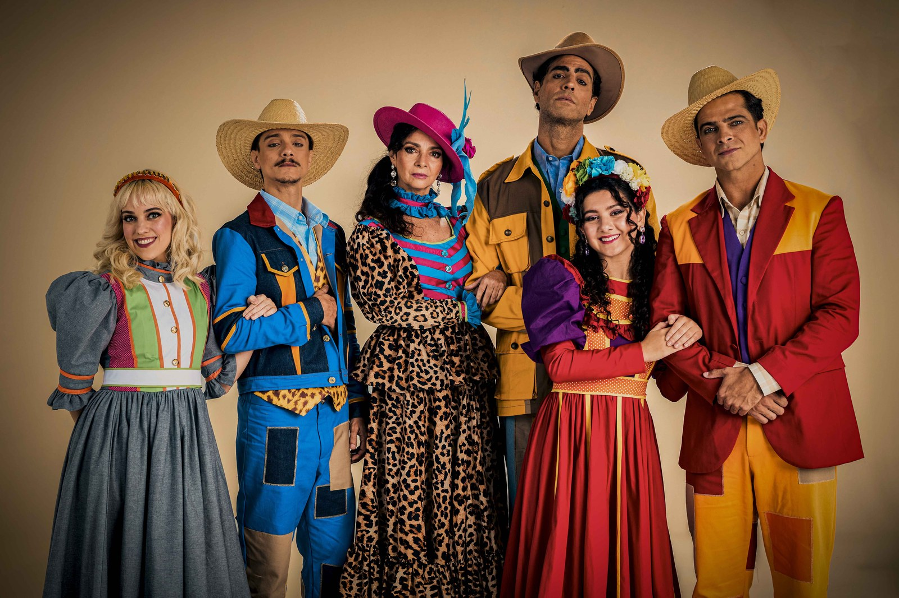
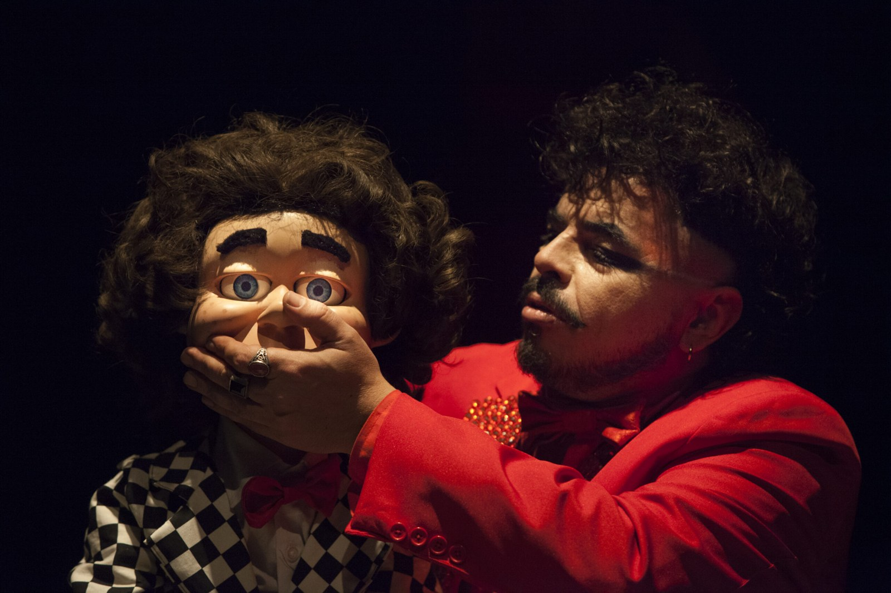
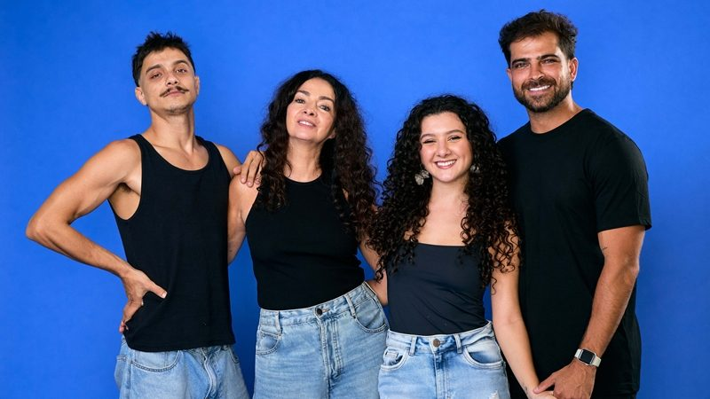
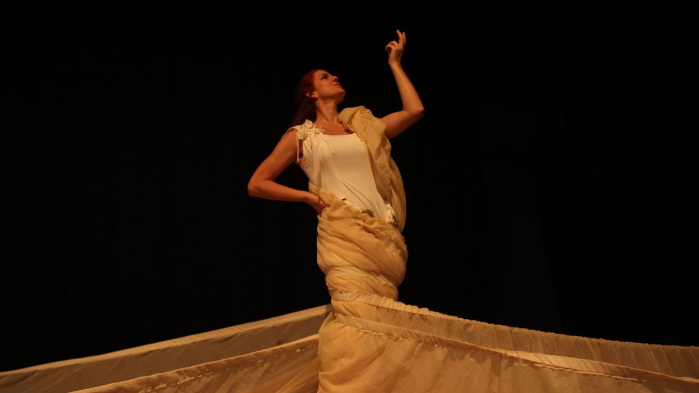
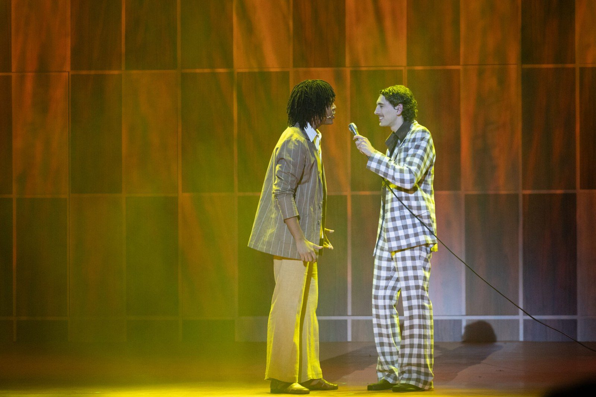

O que fazer no fim de semana em São Paulo (23 a 26/07)

Entre quinta-feira, 23, e domingo, 26 de julho, dá para atravessar o fim de semana em São Paulo sem repetir programa: teatro de bonecos com Libras em cena no Centro Histórico, um musical brasileiro novo em folha inspirado em Shakespeare, Nelson Rodrigues em temporada de apenas dois dias e a volta do espetáculo sobre a vida de Djavan. A Redação Foyer escolheu uma atração para cada dia e reuniu o serviço completo, com endereço, horários, preços e onde comprar.
A régua foi o calendário real da semana: toda indicação tem sessão garantida no dia sugerido, e a maioria se repete nos demais, o que permite embaralhar o roteiro à vontade. Os bolsos também variam, do ingresso de R$ 15 no CCBB à plateia de R$ 150 no Teatro Sabesp Frei Caneca.
Quinta (23/07): bonecos, Libras e absurdo no CCBB
O primeiro programa tem prazo curto. Las Choronas, do coletivo mineiro Las Choronas Companheiras Teatrais, chega à última semana no Teatro do CCBB São Paulo, com sessão nesta quinta às 19h e despedida marcada para 27 de julho. A dramaturgia e a direção são de Byron O'Neill, que transita entre o teatro do absurdo e o surrealismo: em cena, sete artistas manipulam bonecos e são manipulados por eles, num jogo que embaralha as fronteiras entre humano e objeto. Nascido da cena mais votada do Festival de Cenas Curtas do Galpão Cine Horto de 2022, o espetáculo mistura português, italiano e Língua Brasileira de Sinais, com o intérprete e bailarino Uziel Ferreira integrado à encenação.
"Incluir Libras no espetáculo foi pensado para ser também uma expressão do que acontece em cena para pessoas não ouvintes. O intérprete está integrado à cena, e os demais artistas dançam em diálogo com sua expressão corporal e linguística", explica Byron O'Neill, diretor do espetáculo.

Serviço. Las Choronas. Teatro do CCBB São Paulo, Rua Álvares Penteado, 112, Centro Histórico. Quintas, sextas e segundas às 19h; sábados, domingos e feriados às 18h, até 27 de julho. Duração: 60 minutos. Classificação: 12 anos. Ingressos a R$ 30 (inteira) e R$ 15 (meia-entrada), no site bb.com.br/cultura e na bilheteria do CCBB; os ingressos de cada semana são liberados na sexta-feira anterior, a partir do meio-dia.
Sexta (24/07): Shakespeare cai no arraial no Frei Caneca
A noite de sexta é de estreia. Festa no Arraial, O Musical transporta Sonho de uma Noite de Verão para uma vila nordestina em plena festa de São João: as fadas do bosque de Atenas viram criaturas encantadas da mata, e os jovens Hérmia e Lisandro tentam se casar em meio a tradições, interesses de família e feitiços. Thereza Falcão, coautora de novelas como Além da Ilusão, dirige e assina o texto com Mariana Mesquita. No elenco de 14 atores, cantores e instrumentistas, Claudia Ohana lidera a vila. Num circuito dominado por adaptações de títulos internacionais, um musical inédito sobre imaginário brasileiro, com canções feitas para a plateia cantar junto, é aposta rara.
"Festa no Arraial é um convite para que o público volte a acreditar na força dos encontros, dos sonhos e do amor", afirma Thereza Falcão, diretora e autora do espetáculo.

Serviço. Festa no Arraial, O Musical. Teatro Sabesp Frei Caneca, Rua Frei Caneca, 569, Consolação. Nesta semana: sexta (24) e sábado (25) às 20h, domingo (26) às 19h; nos fins de semana seguintes os horários variam, com temporada até 16 de agosto. Ingressos de R$ 80 a R$ 150 (meia de R$ 40 a R$ 75), na plataforma Uhuu e na bilheteria do teatro. Há ingresso solidário com 50% de desconto mediante doação de 1 kg de alimento não perecível.
Ingressos para Festa no Arraial
Sábado (25/07): Nelson Rodrigues em temporada relâmpago
O programa de sábado pede agilidade: são apenas quatro sessões, divididas entre sábado e domingo, para ver Luisa Thiré em Valsa Nº 6, monólogo que Nelson Rodrigues escreveu em 1951. No texto, Sônia, adolescente assassinada aos 15 anos, tenta reconstruir entre delírios e lapsos de memória os acontecimentos que levaram à própria morte, embalada pela valsa de Chopin que dá nome à peça.
Dirigida por Cláudio Torres Gonzaga, a montagem estreou em 2012, ano do centenário do autor, e já passou por Espanha, Portugal e Cabo Verde. Em cena, o figurino de Teca Fichinski faz metade do trabalho: a saia com cerca de 12 metros de tecido toma o palco e sugere a prisão de Sônia nas próprias lembranças. Os horários vespertinos deixam a noite livre para outro programa da lista.

Serviço. Valsa Nº 6. Teatro Arena B3, Praça Antônio Prado, 48, Centro Histórico. Sábado (25) e domingo (26), às 14h30 e às 17h. Duração: 55 minutos. Classificação: 14 anos. Ingressos à venda pelo Sympla, dentro da programação da Arena B3.
Programação e ingressos da Arena B3
Domingo (26/07): Djavan vira teatro na Vila Olímpia
O fechamento fica com Djavan, O Musical: Vidas pra Contar, que reestreia nesta sexta (24) para a segunda temporada paulistana, depois de uma primeira passagem com sessões praticamente esgotadas. Dirigido por João Fonseca, com texto de Patrícia Andrade e Rodrigo França e idealização de Gustavo Nunes, o espetáculo percorre a vida e as canções do compositor alagoano. Raphael Elias vive o papel-título, com Eduardo Louzada alternando em algumas sessões. Durante a primeira temporada, Elias esteve no programa do FOYER ao lado de Milton Filho para falar dos bastidores da produção.
A sessão de domingo, às 18h, é a mais amigável para quem acorda cedo na segunda. De quebra, o teatro fica dentro de um shopping, o que resolve estacionamento e jantar na mesma viagem. A temporada segue até 30 de agosto, de quinta a domingo.

Serviço. Djavan, O Musical: Vidas pra Contar. Teatro Claro Mais SP, Shopping Vila Olímpia (Rua Olimpíadas, 360, Vila Olímpia). Quintas e sextas às 20h; sábados às 16h e às 20h; domingos às 18h, até 30 de agosto. Ingressos de R$ 25 a R$ 250, na plataforma Uhuu e na bilheteria do teatro.